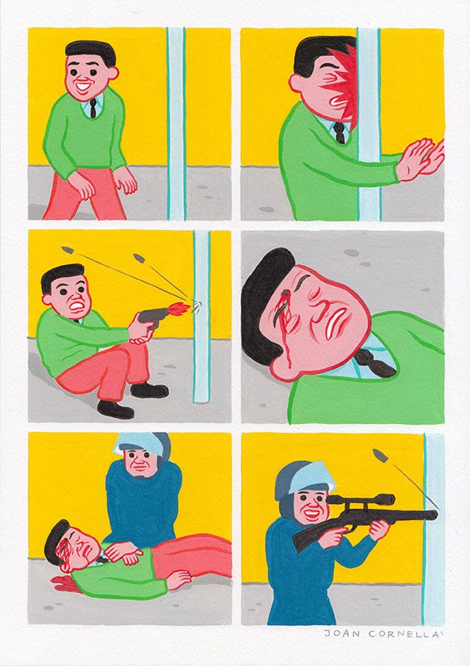
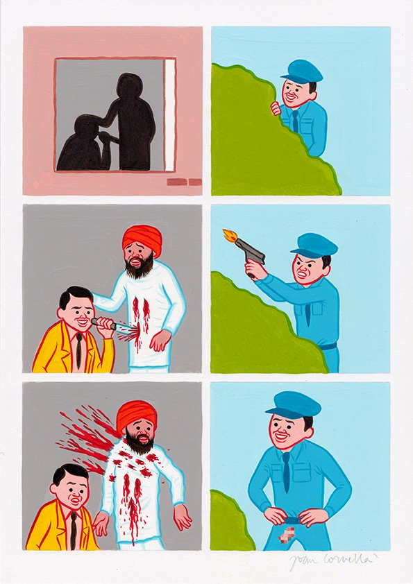

Cornellà’s work has often been described as disturbing or flat-out offensive. Through simplistic visual language, he is able to use satire to comment on the sinister and often bleak side of human nature through a myriad of unconventional scenarios. Everything from our unnatural connection to social media and masturbatory selfie culture to political topics such as abortion, addiction and gender issues - no subject is off limits. Cornellà’s work revels in its absurdity and impropriety.
Upon first glance, Cornellà’s work seems light-hearted and playful, his figures all share a generic blank smile and bright cheery color palette (akin to 1950’s advertising or Airline safety pamphlets) Upon further inspection however, the overwhelming morbidness and unnerving nature shines through with unparalleled force. Black comedy, at it’s core, is about satirizing subjects that are traditionally prohibited, things that are seen as too sa-cred or off limits. Cornellà pokes fun at such topics and cuts to their core with gags and minimal visual clues, illustrating scenes of cannibalism, infanticide, deification, murder, suicide and amputation (used most frequently). While some feel affronted by his work, many connect over it, laughing and feeling bad for laughing all at the same time.
